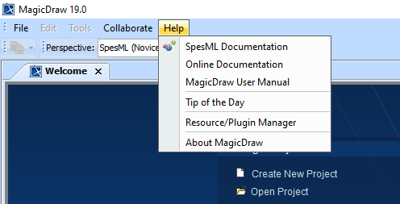

SpesML Plugin Overview |
|
As a result of the project we have developed a SpesML Plugin for the tool MagicDraw (link).
In order to use the SpesML Plugin at least a MagcDraw Standard Edition as well as the SysML Plugin is required.
|
Download
You can find the latest version of the SpesML Plugin here.
|
Installation
To install the SpesML Plugin perform the following steps:
- Start MagicDraw
- Ensure that you have the SysML Plugin installed
- Open Help → Resource/Plugin Manager
- Click on Import and select the SpesML.zip file
- Restart MagicDraw
|
SpesML Model Template
The SpesML Model Template supports the automatic application of the Spes structure when a new model is created.
To create a new model using the SpesML Plugin perform the following steps:
- Start MagicDraw
- Ensure that you have both the SysML Plugin and the SpesML Plugin installed
- Open File → New Project...
- Open the Systems Engineering section
- Select SpesML Project
- Specify the Name and Project location
- Select OK
|

|
SpesML Perspectives
The SpesML Plugin provides two perspectives:
- The SpesML (Novice) perspective reduces all toolbars and context menus to the minimum set of required options. This is recommended for new users.
- The SpesML (Expert) perspective add more sophisticed options to toolbars and context menus.
Of course you can use the default MagicDraw perspectives e.g. Full Featured to work with the SpesML Plugin.
|

|
Integrated Help
The SpesML Plugin provides a fully integrated Help. There are two ways to access the SpesML help:
- Open Help → SpesML Documentation to access this help page directly from within MagicDraw
- Open the Specification of any SpesML model element or SpesML diagram and click on Help to access an element / diagram specific help page
|

|
|
 Technical Viewpoint
Technical Viewpoint